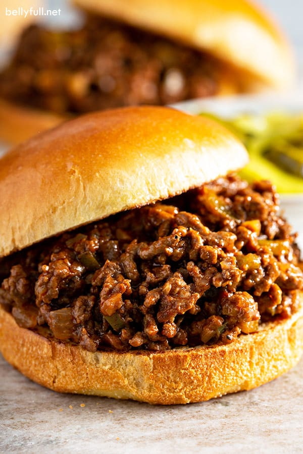

Homemade Sloppy Joes

1 tbs. grass-fed butter or coconut oil
1 lb. grass-fed beef (or other preferred ground meat)
1/2 cup ketchup (low sugar)
1 tbs. mustard
1 tsp. sea salt
3/4 tsp. chili powder
1/2 tsp. onion powder
1/4 tsp. garlic powder
Directions
- Add the butter or coconut oil to a large skillet over
medium to medium-hihg heat. Brown the beef and break it apart
into crumbles as it cooks, about 5-10 mins. Then drain.
- In a bowl, combine all other ingredients and mix into a sauce
- Add the sauce to the skillet and combine until the beef is evenly coated and the
sauce is heated through.